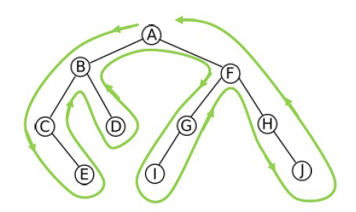
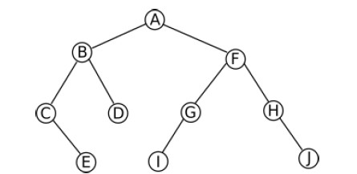

2. Arbres
Les arbres sont des types abstraits très utilisés en informatique. Ce sont des structures de données non linéaires. On les utilise notamment quand on a besoin d'une structure hiérarchique des données.
Un arbre est constitué :
-
d'une racine
-
de nœuds , sommets intermédiaires de l'arbre
-
de feuilles: sommets "finaux" de l'arbre
-
et de branches, qui relient les éléments précédents entre eux
2.1. Parcourir un arbre
2.1.1 Principe
On part de la racine en posant toujours sa main gauche sur une branche, et on avance en laissant celle-ci posée. On passe par ce principe par tous les nœuds de l'arbre. Cette forme de parcours sur les arbres binaires s’appelle le parcours en profondeur main gauche.
Application: sortir d'un labyrinthe.
2.1.2 Parcours

L’ordre dans lequel est fait ce traitement donne trois parcours possibles :
Ordre préfixe : Descente vers le sous-arbre gauche.
Vérifiez que l’arbre est bien parcouru dans l’ordre suivant : A, B, C, E, D, F, G, I, H, J
Ordre infixe : Passage du sous-arbre gauche au sous-arbre droit.
Vérifiez que l’arbre est bien parcouru dans l’ordre suivant : C, E, B, D, A, I, G, F, H, J
Ordre suffixe (ou postfixe) : Remontée depuis le sous-arbre droit.
Vérifiez que l’arbre est bien parcouru dans l’ordre suivant : C, E, D, B, I, G, J, H, F, A
Parcourir un arbre en largeur
Ce parcours aussi qualifié de hiérarchique est par nature itératif
Principe : on parcourt tous les noeuds de hauteur 1 (la racine), puis tous les noeuds de hauteur 2, ceux de hauteur 3 etc. Le parcours se fait en général de gauche à droite.
On dit alors que le parcours se fait, en fait, par hauteur (profondeur) par rapport à la racine.

Vérifier que l'arbre ci-dessous est bien parcouru en largeur dans l'ordre suivant : A, B, F, C, D, G, H, E, I, J
2.2. Arbre binaire
Un arbre est dit binaire lorsque tout les noeuds sont d'arité au maximum égal à 2 (1)
- C'est à dire : les noeuds peuvent avoir au maximum 2 branches
2.2.1 Algorithme
| Taille | |
|---|---|
| Hauteur | |
|---|---|
| Est une feuille | |
|---|---|
| Compte feuilles | |
|---|---|
2.3. Arbre Binaire de Recherche (ABR)
Un arbre binaire de recherche est un cas particulier d'arbre binaire.
Pour avoir un arbre binaire de recherche :
-
il faut avoir un arbre binaire !
-
il faut que les clés de noeuds composant l'arbre soient ordonnables (on doit pouvoir classer les noeuds, par exemple, de la plus petite clé à la plus grande)
-
soit x un noeud d'un arbre binaire de recherche. La clé de son sousarbre gauche est inférieure à la clé du sommet et la clé de son sousarbre droit est supérieur à la clé du sommet
Remaque
Dans un ABR, pour un sommet quelconque, toutes les clés de son sous-arbre gauche sont inférieure à la clé de son sommet et toutes les clés de son sous-arbre droit son supérieures à la clé de son sommet.
En programmation, on utilise le parcours infixe pour parcourir l'arbre dans l'ordre croissant.
2.3.1 Aglorithmes
| parcours infixe | |
|---|---|
| recherche ABR | |
|---|---|